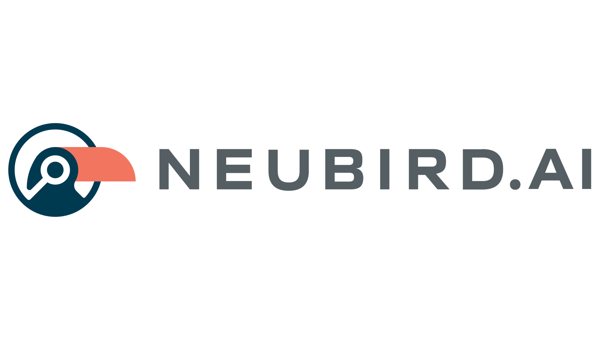

NeuBird Desktop
The Production Ops Agent in your terminal.
NeuBird connects to your telemetry databases and investigates incidents, health, cost, and performance — using natural language.
What NeuBird Does
NeuBird is a terminal-native AI agent for site reliability engineering. It connects to your existing telemetry tools — PagerDuty, Datadog, CloudWatch, Grafana, GitHub, Snowflake, and 30+ more — and lets you ask questions in plain English:
- "What services have the highest error rates right now?"
- "Why did latency spike on api-gateway at 2am?"
- "How much did cloud costs increase this week and what drove it?"
NeuBird queries your telemetry, reasons over results across multiple data sources, and delivers a root cause analysis — complete with evidence, sources, and recommended actions.
Key Features
Predictive analysis — Ask what's likely to page you next. NeuBird identifies degradation trends, capacity cliffs, and silent failures before they become incidents.
Pre-deployment risk assessment — Evaluate code changes before they reach production. NeuBird cross-references PRs with live telemetry to tell you what could break and why.
Agentic investigations — NeuBird doesn't just answer questions. It explores your schema, runs multiple queries, correlates data across sources, and iterates until it finds the answer. You watch the investigation unfold in real time.
Health sweeps — Run /health for a full infrastructure health check. NeuBird scans incidents, alarms, error logs, and recent deployments, then produces a Good/Bad/Ugly summary with recommended actions.
Cost analysis — /cost analyzes cloud spending trends and projects 24-hour costs with breakdowns by service, team, and resource type.
Three agent personas — Switch between investigation styles to match the situation:
| Persona | Model | Best for |
|---|---|---|
| Responder | Claude Haiku | Fast triage, immediate next actions |
| Analyst | Claude Sonnet | Root cause analysis, deep investigation |
| Architect | Claude Opus | Runbooks, design reviews, systemic fixes |
Collapsible tool output — Press Ctrl+O to review every tool call and result from an investigation — even while it's still running. Expand individual calls to inspect full data tables, or collapse them to focus on the analysis. Works mid-investigation: pause to browse results, then press Esc to resume watching.
Local CLI integration — NeuBird automatically detects SRE tools on your machine (kubectl, docker, aws, gcloud, helm, git, terraform, curl, dig, openssl) and makes them available to the AI agent as read-only tools. Ask "how many pods are in the production namespace?" and NeuBird will run kubectl get pods directly. All commands are safety-gated — destructive operations (apply, delete, create, scale) are blocked at the code level.
Tool inventory — On startup, NeuBird displays every tool available to the agent — grouped by source (built-in, cloud MCP, local CLI). Run /tools anytime to see the full inventory with capabilities. Example:
🔧 Tool inventory (18 tools)
📦 Built-in (12)
✓ exec_sql Execute SQL queries against the database
✓ list_schemas List database schemas
...
☁️ ACE MCP (4)
✓ external_tool External service queries
...
💻 Local CLI (2)
✓ kubectl Read-only Kubernetes inspection (pods, logs, events)
✓ run_local_command Execute read-only local CLI commands
🔍 Detected CLIs: kubectl (v1.28.2), docker (24.0.7), git (2.39.0)
⬚ Not found: aws, gcloud, helm, terraform
Persistent learning — NeuBird remembers which queries work with your data sources and which telemetry tables matter for each type of investigation. It gets faster and more accurate over time.
Custom slash commands — Drop a .md file into the skills/ directory to create custom investigation templates. The filename becomes the command, and the content becomes the prompt.
Built-in investigation skills — NeuBird ships with ready-to-use playbooks for the most common SRE workflows:
| Command | What it does |
|---|---|
/handoff |
On-call shift briefing — active incidents, recent deploys, current health, watch items |
/changes |
Compare two time windows — find every deploy, config change, metric shift, and correlate them |
/timeline |
Reconstruct a minute-by-minute incident timeline from all telemetry sources |
/pir |
Generate a leadership-ready post-incident review with 5-whys and action items |
/slo |
Calculate error budgets, burn rates, and project when SLOs will breach |
/blast-radius |
Map upstream/downstream dependencies and quantify failure impact |
/certs |
Scan TLS certificates across endpoints, flag anything expiring within 30 days |
Enable them by copying to your skills directory:
cp skills/*.md ~/.config/neubird/skills/
NeuBird advertises available skills on the welcome screen so you always know what's possible — no memorization required.
Sentinel mode — Run /sentinel to activate continuous background monitoring. NeuBird's sentinel polls for new alerts every 5 minutes and runs full health sweeps every hour. It surfaces actionable findings as they appear — not on a dumb timer, but by detecting real changes in your telemetry:
> /sentinel
🛡️ Sentinel active — polling every 5m0s, full sweep every 1h0m0s.
Type /sentinel status to see findings, /sentinel off to stop.
🛡️ Sentinel: 2 new finding(s) detected — type /sentinel status to review
> /sentinel status
🛡️ Sentinel Status
Running · Polls every 5m0s · Sweeps every 1h0m0s
Last poll: 14:35:12 · Last sweep: 14:30:00
Active findings: 3
🔴 payment-service error rate spike ✨
Error rate jumped from 0.1% to 3.2% in the last 15 minutes
→ Investigate payment-service error rate spike and correlate with recent deploys
🟡 auth-service connection pool at 82% ✨
Connection pool utilization trending toward saturation
→ Check auth-service connection pool usage and project when it hits the limit
🔵 Upcoming cert expiry: api.example.com
TLS certificate expires in 12 days
→ Scan TLS certificates and identify renewal schedule
Use /sentinel off to stop. The sentinel runs in the background — you can investigate other things while it monitors.
MCP tool support — Extend NeuBird with Model Context Protocol servers for additional data sources and capabilities beyond SQL.
Installation
macOS / Linux (Homebrew)
brew install neubirdai/tap/neubird
Linux (Snap)
sudo snap install neubird-desktop
Linux (Debian / Ubuntu)
curl -LO https://github.com/neubirdai/neubird-desktop/releases/latest/download/neubird_linux_amd64.deb
sudo dpkg -i neubird_linux_amd64.deb
Linux (Fedora / RHEL)
curl -LO https://github.com/neubirdai/neubird-desktop/releases/latest/download/neubird_linux_amd64.rpm
sudo rpm -i neubird_linux_amd64.rpm
Windows
Download neubird_windows_amd64.zip from the latest release, extract it, and add the folder to your PATH:
# PowerShell — download and extract
Invoke-WebRequest -Uri "https://github.com/neubirdai/neubird-desktop/releases/latest/download/neubird_windows_amd64.zip" -OutFile neubird.zip
Expand-Archive neubird.zip -DestinationPath "$env:LOCALAPPDATA\neubird"
# Add to PATH (current session)
$env:PATH += ";$env:LOCALAPPDATA\neubird"
# Add to PATH (permanent — requires restart)
[Environment]::SetEnvironmentVariable("PATH", $env:PATH + ";$env:LOCALAPPDATA\neubird", "User")
Docker
docker run -it --rm neubirdai/neubird-desktop:latest
Verify installation
neubird --version
Quickstart
1. Log in
neubird login https://yourcompany.app.neubird.ai
2. Connect and investigate
neubird
# Reconnect to your last session
neubird --reconnect
# Run a health sweep immediately after connecting
neubird --assess
3. Ask questions
Once connected, type any question and press Enter. NeuBird streams its investigation — showing every tool call and reasoning step — then delivers a formatted analysis.
4. Use slash commands
| Command | What it does |
|---|---|
/health |
Infrastructure health sweep (1h lookback) |
/health 4h |
Health sweep with custom lookback |
/cost |
Cloud cost analysis + 24h projection |
/handoff |
On-call shift briefing |
/changes |
What changed? — compare time windows |
/timeline |
Reconstruct incident timeline |
/pir |
Post-incident review document |
/slo |
SLO burn rate check |
/blast-radius |
Map failure blast radius |
/certs |
TLS certificate expiry scan |
/sentinel |
Start sentinel mode — continuous alert monitoring |
/sentinel status |
Show sentinel findings |
/sentinel off |
Stop sentinel |
/agent |
Switch agent persona |
/tables |
List available telemetry tables |
/tools |
Show all tools with capabilities |
/project |
Switch database |
/reset |
Clear conversation history |
Keyboard Shortcuts
| Key | Action |
|---|---|
Enter |
Submit question |
Esc |
Cancel in-progress investigation |
Ctrl+O |
Toggle tool output review (works mid-investigation) |
↑ / ↓ |
Navigate input history |
Ctrl+R |
Reverse search through history |
← / → |
Navigate welcome tiles |
Tab |
Accept suggestion / complete command |
? |
Toggle shortcut overlay |
Ctrl+C (twice) |
Quit |
Supported Data Sources
NeuBird connects to your existing telemetry and operations tools via read-only API integrations. Out of the box, it works with:
Incident Management — PagerDuty, Opsgenie, ServiceNow
Monitoring & Observability — Datadog, Grafana (Loki, Tempo, Mimir), CloudWatch, New Relic, Prometheus
Cloud Infrastructure — AWS (EC2, RDS, ECS, Lambda, Cost Explorer), GCP, Azure
CI/CD & Source Control — GitHub, GitLab, ArgoCD
Data Warehouses — Snowflake, BigQuery, Redshift
And more — Jira, Confluence, Slack, Kubernetes, custom FDW plugins
Local CLI tools (auto-detected on your machine) — kubectl, helm, docker/podman, AWS CLI, gcloud, Azure CLI, git, terraform, curl, dig, openssl
Server API
When running in server mode (neubird serve), Falcon exposes a REST API for programmatic access:
| Method | Endpoint | Description |
|---|---|---|
GET |
/health |
Server health check |
POST |
/v1/infer |
Run an investigation (SSE streaming) |
GET |
/v1/tools?session_id=... |
List available tools for a session |
GET |
/v1/skills |
List available investigation skills |
POST |
/v1/sentinel/start |
Start sentinel mode |
POST |
/v1/sentinel/stop |
Stop sentinel mode |
GET |
/v1/sentinel/status |
Sentinel status and config |
GET |
/v1/sentinel/findings |
Current sentinel findings |
POST |
/v1/sessions/reset |
Reset conversation history |
POST |
/v1/sessions/delete |
Delete a session |
POST |
/v1/sessions/feedback |
Submit rating or insight |
Sentinel API
Start sentinel monitoring via the API:
# Start sentinel with custom intervals
curl -X POST http://localhost:8080/v1/sentinel/start \
-H "Content-Type: application/json" \
-d '{"poll_interval": "5m", "sweep_interval": "30m", "project_uuid": "your-project-id"}'
# Check findings
curl http://localhost:8080/v1/sentinel/findings
# Stop sentinel
curl -X POST http://localhost:8080/v1/sentinel/stop
All endpoints require the X-Desktop-Secret header when DESKTOP_SECRET is set.
Documentation
Full documentation is available at neubirdai.github.io/neubird-desktop.
License
Proprietary. Copyright 2024-2026 NeuBird, Inc.